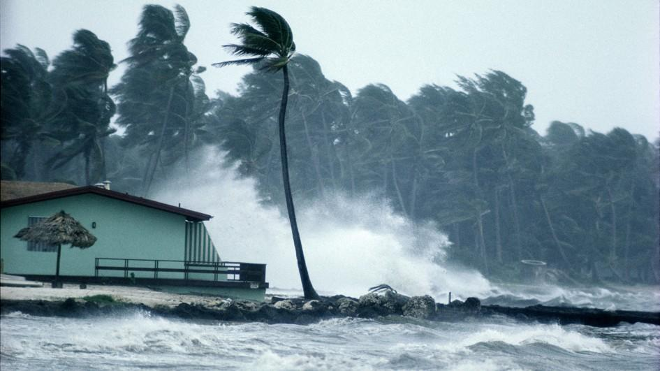

Pointers for hurricane prepardeness
- Listen to a Radio for information on the weather
- Make sure you have supplies, water, flash light, batteries, canned foods etc
- Anything that can be blown away by the wind must be brought in, for example bikes, plants any other loose items outside
- Install shutters or board up your windows
- Turn refrigerator to highest setting to preserve food
- Turn off propane tank
- Unplug small appliances
- Fill your car’s gas tank
- Create a hurricane evacuation plan with members of your household
What to Do After a Hurricane
- Continue listening Radio or the local news for the latest updates
- Stay alert for extended rainfall and subsequent flooding
- Drive only if necessary and avoid flooded roads and washed out bridges
- Keep away from loose or dangling power lines and report them immediately to the power company
- Stay out of any building that has water around it
- Use flashlights in the dark. Do NOT use candles